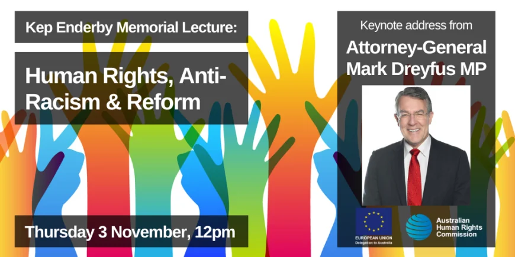

You're invited to attend the Kep Enderby Memorial Lecture:
3 November 2022, 12:00-1:30pm
Free online webinar
Join hundreds of people around the country for the prestigious Kep Enderby Memorial Lecture. Delivered by The Hon Mark Dreyfus KC MP, the Attorney-General of Australia, this year’s event is one of the first public opportunities to hear the new Government’s agenda for human rights policy implementation and reform.
The lecture will be followed by a panel discussion to reflect on online hate and the need for legislative reform.
This is a FREE online event with up to 1000 participants expected to attend.
We stand at an important moment in our nation’s development. The challenges we face to maintain a peaceful, harmonious, multicultural society are many. To ensure a country free of racial discrimination in which everyone has every chance to fully participate in society, we need to move from a space of ‘safe’ to ‘brave’ on issues affecting those who experience discrimination.
This lecture is an opportunity to hear from the Attorney-General on the Australian Government’s vision to advance human rights. The AG will speak to the Government’s commitments on:
Justice for First Nations peoples and communities
A National Anti-Racism Strategy
Governance, integrity and transparency of human rights institutions.
Register Here